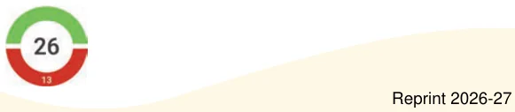

Sometimes, when an expression is not accompanied by a context, there can be more than one way of evaluating its value. In such cases, we need some tools and rules to specify how exactly the expression has to be evaluated.
To give an example with language, look at the following sentences:
- Sentence: "Shalini sat next to a friend with toys".
Meaning: The friend has toys and Shalini sat next to her.
- Sentence: "Shalini sat next to a friend, with toys".
Meaning: Shalini has the toys and she sat with them next to her friend.
This sentence without the punctuation could have been interpreted in two different ways. The appropriate use of a comma specifies how the sentence has to be understood.
Let us see an expression that can be evaluated in more than one way.
Example 4: Mallesh brought 30 marbles to the playground. Arun brought 5 bags of marbles with 4 marbles in each bag. How many marbles did Mallesh and Arun bring to the playground?
Mallesh summarized this by writing the mathematical expression —
\(30 + 5 \times 4\).

Without knowing the context behind this expression, Purna found the value of this expression to be 140. He added 30 and 5 first, to get 35, and then multiplied 35 by 4 to get 140.
Mallesh found the value of this expression to be 50. He multiplied 5 and 4 first to get 20 and added 20 to 30 to get 50.
In this case, Mallesh is right. But why did Purna get it wrong?
Just looking at the expression \(30 + 5 \times 4\), it is not clear whether we should do the addition first or multiplication. Just as punctuation marks are used to resolve confusions in language, brackets and the notion of terms are used in mathematics to resolve confusions in evaluating expressions.